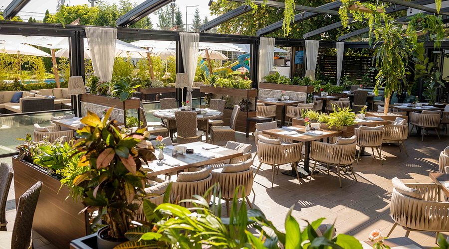
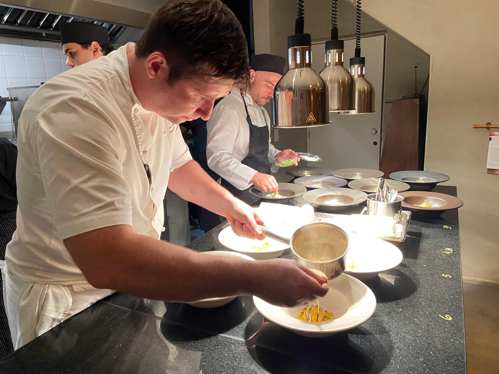
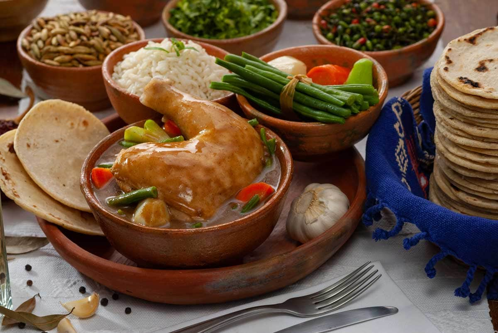

Galería




Nuestros precios
Una experiencia culinaria única, donde la elegancia se encuentra con el sabor.
Ver MenúSomos un grupo de trabajo que busca crear momentos unicos a nuestros clientes, brindando el mejor servicio para llevar mas que un solo plato de comida a la mesa de nuestros clientes. sostenibilidad con excelencia gastronómica.
Convertirnos en una empresa reconocida a nivel nacional por nuestro autentico sabor tradicional transmitiendo con orgullo la riqueza de la gastronomia guatemalteca.
📍 Avenida Principal, Ciudad De Guatemala
📞 +502 1234 5678
✉️ contacto@restaurantechapins.com